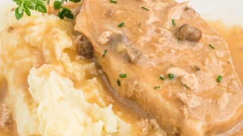

These baked pork chops with cream of mushroom soup are fork-tender — when done right. They're great comfort food for cold days! The cream of mushroom soup gravy is great on both the pork chops and mashed potatoes.
Ingredients
- ½ yellow onion, sliced
- 4 pork chops
- 26 ounces condensed cream of mushroom soup
- ¼ cup water
- 2 cubes beef bouillon
Steps
- Gather all ingredients. Preheat the oven to 325 degrees F (165 degrees C).
- Place onion slices on the bottom of a glass baking dish. Lay pork chops over onions. Cover chops evenly with condensed soup.
- Add water and bouillon, breaking up the bouillon cubes to spread flavor. Cover the baking dish with aluminum foil.
- Bake pork chops in the preheated oven, stirring gravy once or twice, until no longer pink in the centers, about 1 hour. An instant-read thermometer inserted into the center of a chop should read at least 145 degrees F (63 degrees C).
